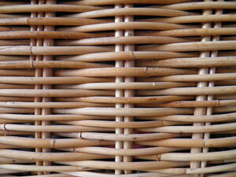

ⲕⲁⲃⲁⲓ B nn as pl, cages, baskets (?) of wicker-work: Montp 169 among tools ⲛⲓⲕ. اقفاص, between ⲕⲁⲙ & ϫⲁⲛⲓϫⲓ.Prob from ⲃⲁ (ⲃⲁⲓ) q v.
ⲕⲁⲃⲁⲓⲧⲏⲥ maker of such work (ⲕⲁⲃⲁⲓ + -της, Stern 169): K 113 قفّاص.

| ⲕⲁⲃⲁⲓⲧⲏⲥ B | maker of such work (ⲕⲁⲃⲁⲓ + -της)446 | 99a | |||||||
ⲕⲁⲃⲁⲓ B nn as pl, cages, baskets (?) of wicker-work: Montp 169 among tools ⲛⲓⲕ. اقفاص, between ⲕⲁⲙ & ϫⲁⲛⲓϫⲓ.Prob from ⲃⲁ (ⲃⲁⲓ) q v.
ⲕⲁⲃⲁⲓⲧⲏⲥ maker of such work (ⲕⲁⲃⲁⲓ + -της, Stern 169): K 113 قفّاص.